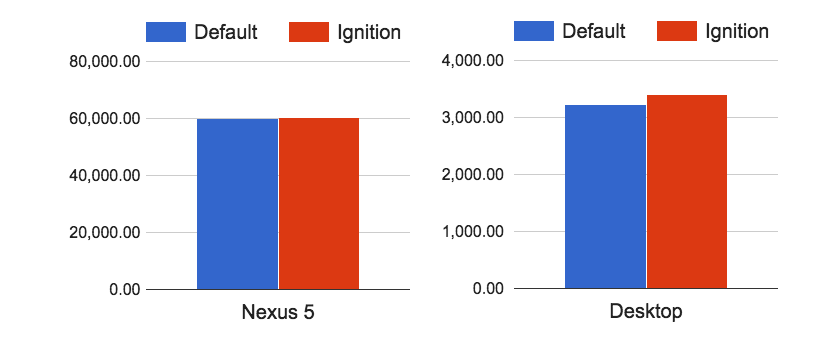
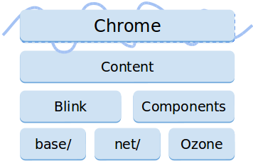

BlinkOn6
- Held on June 16 and June 17, 2016
- Google's Munich office
Who's in BlinkOn6?
- 183 from Googlers
- 32 from others
- 5 from LG Electronics
Progressive web apps are a thing
A progressive web app?
- Instant Loading
- Add to Home Screen
- Push Notifications
- Fast
- Secure
- Responsive
How do we help it?
- A more predictable platform
- A more powerful platform
- A faster platform
Ignition - an interpreter for V8
as is

What's the problem?
Memory
About 30% of the V8 heap is JITed unoptimized code
Startup Speed
Most functions are parsed multiple times
33% of time spent parsing + compiling
Complexity
Three compilers with complex interdependencies
Why Interpreter?
- Reduced memory usage
Compiled to a concise bytecode, rather than machine code
- Reduced parsing overhead
Bytecode is concise, allowing eager compilation of JS source
- Reduced compiler pipeline complexity
Bytecode is source-of-truth for optimizing/deoptimizing
to be
Ignition Performance
Crankshaft and TurboFan disabledOctane
Speedometer
Ignition Memory Usage
Octane
Mobile Top 10
Eager compilation

Houdini
Build new CSS primitives without waiting for a specification committee
- Typed OM : high performance object access to CSSOM
- Properties & Values : typed custom properties
- Worklets : synchronous, isolated JavaScript execution
- Paint API : DIY rendering
- Layout API : DIY layout
Headless Chrome
- Browser without a UI
- Able to run in a server environment
- Intended for testing and automation
- Out of Scope: Not an embeddable browser widget
Differences from regular Chrome

- No chrome-level features (e.g., profiles, sync, safe browsing, ..)
- No UI -- offscreen software rendering
- No extensions (for now)
- No audio
Blink Onion Soup
- Simplified abstractions
- Reduced duplication
- Removed a lot of layers
- Moved from content/renderer to blink
- Improved performance
- Services are coming!
- Blink platform is modularizing
Lots of interventions in progress
Passive event listeners
Intersection Observer
Let you know when an observed element enters or exits the browser's viewportRaw Speed != Feeling Fast
Historically, focused on raw speed to make engine more powerful
- Found slow things
- Making them faster
- It worked for a time!
But more deeply understanding use cases and tuning for them more directly
RAIL became a thing in early 2015!
RAIL?

- Repond in under 100ms
- Render frame every 16ms
- Maximize idle time - Main thread JS work chunked no larger than 50ms to be available enough to handle the next user input
- Deliver content under 1000ms
How we measure and optimize for RAIL in V8's GC
Ideally: No GC ever
Prioritize
V8 GC Update focusing on A
Orinoco
Parallel compaction
V8 implements a generational garbage collector
where objects may move within the young generation,
from the young to the old generation,
and within the old generation
The problem is
Moving objects is expensive
since underlying memory of objects needs to be copied to new locations and the pointers to those objects are also subject to updating
Sequential moving of objects and updating pointers
Parallel moving of objects and updating pointers
Black allocation
Assumption:
Objects allocated during marking will survive the following GC
Objects are allocated as live (already marked)